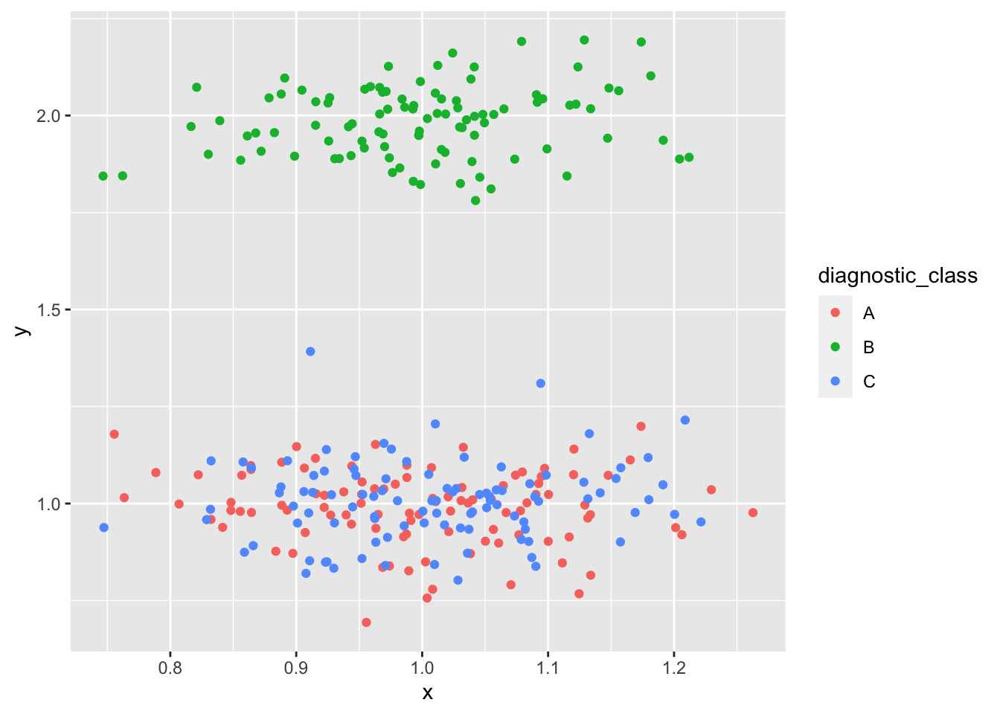

Chapter 12 Dimensionality Reduction
12.1 Background
Most complex diagnosis is conducted without recourse to perfect prevalence data, or to the characteristics of available tests. Indeed, we often don’t know which variables are relevant. An expert in pathology is defined, more or less, by an intuitive understanding of prevalence and the properties of tests which can be used to classify diseases.
The process by which pathologists classify disease is often poorly understood. Magical thinking and arguments from authority infuse the process, particularly at the edges of what is known–especially when disease is rare and evidence is weak. Careers in diagnostic pathology were formerly made by adding a new rare disease to the ever-growing bestiary.
Beginners often stumble when trying to visualize the testing process, and how classes are established. Dimension reduction methods are useful to prioritize variables (factors), and begin the iterative process of classification-test validation-clinical testing, it is often useful to see which ones permit the clearest distinction between clusters in high dimensional spaces–like those created when numerous tests are deployed to establish a single diagnosis.
Resources to understand dimensionality reduction: https://www.datacamp.com/community/tutorials/introduction-t-sne
library(tidyverse)
library(plotly)##
## Attaching package: 'plotly'## The following object is masked from 'package:ggplot2':
##
## last_plot## The following object is masked from 'package:stats':
##
## filter## The following object is masked from 'package:graphics':
##
## layout12.2 Experiment in showing dimensionality reduction for pathologists
The first step is to build three separate “clouds” of data that do not overlap in three dimensions, but which do overlap in two dimensions.
df <- tibble(
diagnostic_class = rep("A", 100),
x = rnorm(100, mean = 1, sd = 0.1),
y = rnorm(100, mean = 1, sd = 0.1),
z = rnorm(100, mean = 1, sd = 0.1)
)
df1 <- tibble(
diagnostic_class = rep("B", 100),
x = rnorm(100, mean = 1, sd = 0.1),
y = rnorm(100, mean = 2, sd = 0.1),
z = rnorm(100, mean = 1, sd = 0.1)
)
df2 <- tibble(
diagnostic_class = rep("C", 100),
x = rnorm(100, mean = 1, sd = 0.1),
y = rnorm(100, mean = 1, sd = 0.1),
z = rnorm(100, mean = 2, sd = 0.1)
)
df <- df %>% rbind(df1) %>% rbind(df2)The following 2D and 3D plots make it clear that the diagnostic class is only obvious when one takes into account the z-axis.
df %>% ggplot(aes(x,y, color = diagnostic_class)) + geom_point()
plot_ly(x=df$x, y=df$y, z=df$z, type="scatter3d", mode="markers", color = df$diagnostic_class)12.2.1 Principle component analysis
PCA concentrates on placing dissimilar data points far apart in a lower dimension representation.
Some useful websites for principle component analysis: http://huboqiang.cn/2016/03/03/RscatterPlotPCA
library(ggfortify)
autoplot(prcomp(df[,2:4]), data = df, colour = 'diagnostic_class', size = 8)
12.2.2 t-distributed stochastic neighbor embedding
library(Rtsne)
df_unique <- unique(df) #removes duplicates
df_matrix <- as.matrix(df[,2:4])
set.seed(2020)
tsne_out <- Rtsne(df_matrix)
tsne_plot <- data.frame(x = tsne_out$Y[,1], y = tsne_out$Y[,2], col = df$diagnostic_class)
ggplot(tsne_plot) + geom_point(aes(x=x, y=y, color=col))